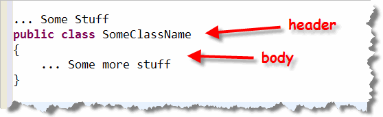
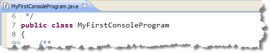
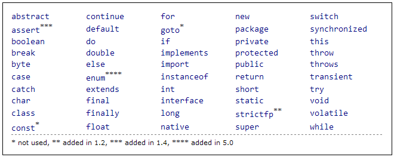
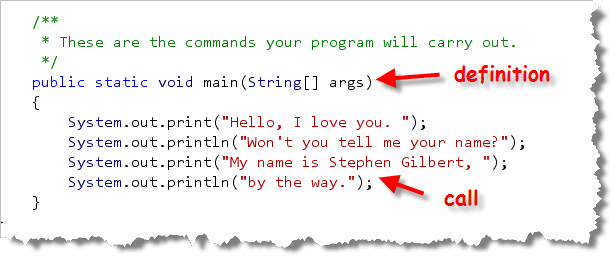
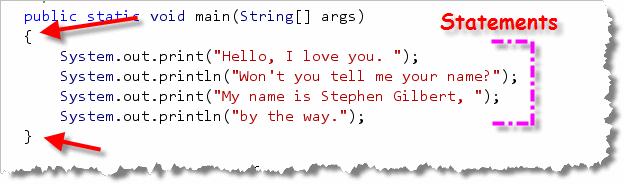
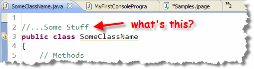
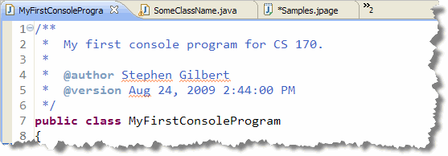
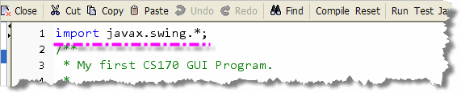

In his classic essay on Sofware Enginerring, The Mythical Man Month, the eminient Computer Scientist Frederic P. Brooks explained one reason why computer programming is so captivating. As Brooks put it:
The programmer, like the poet, works only slightly removed from pure thought-stuff. He builds castles in the air, from air, creating by exertion of the imagination. Few media of creation are so flexible, so easy to polish and rework, so readily capable of realizing grand conceptual structures.
Yet the program construct, unlike the poet's words, is real in the sense that it moves and works, producing visible outputs separate from the construct itself. It prints results, draws pictures, produces sounds, moves arms. The magic of myth and legend has come true in our time. One types the correct incantation on a keyboard, and a display screen comes to life, showing things that never were nor could be.
Of course, programming really isn't magic, and in this section you'll begin to learn the meaning behind each of the phrases that make up your Java programs.
We'll start this week by looking at the general structure and syntax that's common to all Java programs, and then we'll look, in detail, at the simplest kind of program, the Java console program. To do that, we'll put the program you typed earlier, MyFirstConsoleProgram, "under the microscope". If you want, you can open up DrJava and follow along.
To understand this lesson, you should have completed Homework 2.
Java Program Organization
Java is an object-oriented programming language, and its programs are organized as communities of objects. Objects are the individual building-block—the parts, if you like—that make up a working program. Each of these objects combine a data portion along with the procedures or actions that operate on that data.
Each individual object that your program uses is actually
an instance of a particular type or class of
objects. In your programs, for instance, you used
an object named System.out to print your
output. The System.out object belongs to
the class named PrintStream.
Which brings us to the programs you created in the previous section. If you look inside MyFirstConsoleProgram.java and MyFirstGUIProgram, or MyFirstJavaApplet, (which you'll complete for Homework 3 and Homework 4), you'll see that:
- Every Java program is organized as a class definition.
- A class definition is a blueprint that is used to construct objects; in the case of an applet or application, you may want to think of that object as a "program object."
Not every Object-Oriented language works like this. In C++, for
instance, every program consists of a main() function that
may, or may not create different kinds of objects. In Java,
there are no separate program entities; there are only
classes and objects.
Basic Structure
The basic structure for every Java program looks like this:

The file name for this program must be SomeClassName.java (since the class name isSomeClassName), and the file can contain only
one public class definition. (You can define other
helper classes in the same file, but they cannot be
public classes.)
Note : This is different from many other
programming languages where the program name and the name of
the file are not related. In Java, the name of the file and
the name of the program must be identical
(including case). The file name and the public class
it contains must match exactly.
A class definition has two parts: a class header and a class body. The header "declares" or "announces" the class for the compiler; think of it as a formal introduction.
Braces and Blocks
The class body, (the portion of the class in braces { }),
is where the attributes and methods for the class are defined.
In Java, braces {} are used to mark the beginning and end
of the class body. Braces are also used to surround (or
delimit) the body of a method, as well as the bodies of
loops and selection statements. Just think of braces as
punctuation that says:
{ "this is the beginning of a section"
} "and, this is the end of a section"
In programming, a delimited "section" of code like this is called a block. Braces, along with indentation, allow you to quickly see and understand the general structure or "shape" of a program. To facilitate this, every time you use a set of braces, the "stuff" inside the braces should be indented, by one tab stop, as well.
The Class Header
Let's start by examining the header for MyFirstConsoleProgram.java and then we'll come back to the body. The class header looks like this:

The first part of the header is the declaration public class.
The class declaration simply says to the compiler:
"May I introduce a class definition?"
so the compiler knows how to interpret the words that follow. Both public and class are two of the fifty-or-so Java keywords. Keywords, (also sometimes called reserved words), are the built-in vocabulary of a language. In Java:
- all keywords are lowercase
- you cannot use keywords as identifiers, (names you make up and then use to describe classes, objects, methods, and attributes)
- You must spell the keywords correctly and use them in the correct context. If you use a keyword inappropriately, or if you misspell it, you will generate a syntax error: a violation of Java's internal rules of grammar.
Here is a list of the Java kewords from
the online Java Tutorials.

Name of the Class
When you write the declaration public class, this puts the Java compiler into such a state of anticipation, that it won't be satisfied unless you tell it exactly what class is about to be described. Thus, the next part of the class header must be the class name. Here we've named our class MyFirstConsoleProgram. (Remember, also, that this class must be located in a file that matches the class name exactly, and that has the extension .java.)
While public and class are keywords, the word MyFirstConsoleProgram is a different kind of beast; this is called an identifier. An identifier is a name that you make up to label classes, attributes, methods, and variables. You can use any name you like, as long as you follow a few simple rules:
- you can use letters, digits, and the underscore character
- your identifier cannot start with a digit
- identifiers are case sensitive
- you cannot use keywords as identifiers
Remember : Unlike keywords, (which are all lowercase), you may use uppercase as well as lowercase in your identifiers. But, the identifiers cat, Cat, and CAT are not the same!
If you've programmed in another language, such as C, Pascal, or Visual Basic, these rules don't seem too different. The biggest difference (when it comes to identifiers) between Java and these other languages is not readily apparent, but pops to the surface when you ask the question, "What's a letter?"
Unlike these other languages Java isn't limited to using the ASCII character set (the most widely used computer-character encoding scheme). Instead, it uses Unicode, the international character set that provides some 65,000 different characters. So, although Java identifiers are limited to characters and digits, those characters and digits can be any valid Unicode character or digit. (In other words, you can use Japanese, Russian, or Sanscrit characters when creating your identifiers.)
Library Identifiers
Many of the identifiers that you'll use in your programs will
be selected by other programmers. These library
identifiers are names, like String or Applet,
should, generally, be treated like reserved words, even though the
Java language doesn't enforce this. If you, for instance, create
a program named String, then your compiler can't use
the Java library String class inside that program.
Naming Conventions
In programming, as in dining, what is legal is not always appropriate. While it is usually not illegal to eat with your hands, it's often ill-advised, and so most of us obey a set of social conventions.
Here are the more-or-less agreed upon naming standards in the Java world:
- Class names: CapitalizeEveryWord
- Method and field names: startLowThenCaps
- Constants: CAPS_WITH_UNDERSCORES
Much like social conventions, identifier naming conventions allow you to infer a great deal about an object by the way it is named. Also like social conventions, identifier naming conventions can become prissy and pedantic, ignoring the more important considerations of clarity and simplicity.
Use Meaningful Names
It is always more important to make sure that your variable names impart meaning to your audience, (that is, other programmers trying to read your code), than that they adhere to some rigid naming rule. To that end, you should follow the "golden rules" that are true in any programming language:
- Try to make your names understandable
- Use names that accurately describe what your identifier does.
For instance, the variable names:
quarterlySales = quarterlySales + monthlySales;
are much easier to understand thanx = x + x2;
I should mention two other recommendations. Java allows you to begin a name with an underscore as well as a dollar sign ($), but you should avoid doing so. Java itself uses the dollar sign to create names for "inner classes". To avoid some unusual and hard to find bugs, you should avoid using the dollar sign ($) in your names at all.
It is also legal to start an identifier with an underscore, but you should avoid that as well. It is just too easy to miss a leading underscore when you are reading code, and if you use them you'll spend many more fruitless hours staring at code that "should" work, but doesn't for some reason.
Introducing Methods
Now that you've learned about the general structure of a Java program, and have learned how to define the class header, let's move on and take a look look at the class body, where you'll define two things:
- the attributes or data elements that belong to this particular class.
- the methods or actions that this particular class knows how to perform.
We'll study attributes later in the coures. Methods are where the real action takes place in your Java programs.
What is a Method?
A method is:
a named piece of code that performs an
action,
or that calculates a value.
Methods appear in two places in your Java programs:
- when you define a method, you write the Java instructions (called statements) to carry out a particular task, and then associate those statements with a particular name.
- when you invoke or call a method, you use the name to perform the predefined actions as your program runs.
Here's a fragment from MyFirstConsoleProgram.java
showing the definition of a method named main()
which contains four statements, each of which calls
the method named println():

Let's start by looking at defining methods.Defining a Method
When you create a new class, you'll have define the methods that give the class its distinctive behavior. If you don't define any methods, then your program just won't do anything!
All Java applications (but not applets), have to define one
such method, the method named main(), which you just
saw. Notice that a method definition, like a class definition,
consists of both a header, and a body, and
that the method definition is placed inside the class
definition.
The Method Header
The main method header consists of these five pieces:
public: This is called the access specifier and it means that objects from different classes are free to ask theMyFirstConsoleProgramclass to perform this action. If the method wereprivate, then only otherMyFirstConsoleProgramobjects would be able to invoke the method, and we couldn't run the program. You'll make almost all of your methodspublic.static: This a a modifier indicating that themain()method isn't actually associated with a particular instance of the MyFirstConsoleProgram class, but with the class itself. This allows it to be used to start your program running, even though no MyFirstConsoleProgram objects have been created. Most methods will not use this modifier, but themain()method must.void: The access specifier is followed by the method return type. Every method can, potentially, produce a single value. If themain()method produced a value, we'd put the type of that value (number, character, etc) here. If a method produces no value—likemain()—you have to say so by using a return type ofvoid.-
main: This is the name of the method. Because the Java interpreter program looks for a method namedmain()when you try to run your program, you must be careful to spell this exactly as shown. WritingMain()orMAIN()will not create a compile-time or syntax error, but your method won't be called when you try to run the program either, and so none of your instructions will be carried out. -
(String[] args): Every method definition has a set of parentheses following the method name. If a method requires parameters (also known as arguments), here's where the definitions for those parameters are placed. Themain()method is prepared to accept any number ofString(or text) arguments that can be used to customize your program's behavior when started.This set of command-line arguments is traditionally named
args. The brackets ([]) betweenStringandargssay that we could supply any number ofStrings, or, none at all. We could have named this parameter anything we like, because "args" is just an identifier. UsingcommandLineStringsinstead ofargswould have worked just as well; it would just require a bit more typing than when we used the nameargs.
In reality, it's kind of early in the course to be dropping all of
these details on you. For now, I'd simply treat the syntax of the
main() method as a magical incantation that has to
be typed in a particular manner, and leave it at that. If you
understand that main is where a Java application
program starts running, then you're doing fine.
The Method Body
Like the class body, the begin and end of a method body are
marked by braces. Inside the braces are statements
that perform actions or create objects. Each time the method is
activated (called or invoked), all of the statements inside
the method body are performed, in order, one after another.

MyFirstConsoleProgram's main() method contains four statements; twoprint() statements that prints the phrases
"Hello, I love you. " and "My name is Stephen Gilbert, " on the display.
Each print() statement is followed by a println()
statement. The first prints "Won't you tell me your name?", while the
second prints "by the way.".
When the print() method displays its message on the
console window, it leaves the output cursor sitting at the end of the
text it printed. When the second statement is executed, it's
println() displays "Won't you tell me your name?" on the same line
as the "Hello, I love you. " generated by the first print()
statement.
The println() method, used in the second and fourth statements,
add a newline character to the end of any message you print.
Thus, when the third statement is executed, it doesn't follow the
words "Won't you tell me your name?", but starts on a new line.
The Role of the Semicolon
Since statements can span multiple lines, you may be wondering
how the Java compiler tells when a statement is done. Java uses
the semicolon (;) to mark the
end of a statement, just like C and C++. Note that this
is different than Pascal, where a semicolon is used to
separate multiple statements, and Visual Basic where the
end of the line marks the end of a statement. It's also different
from JavaScript where semicolons are optional.
Calling a Method
Each of the four statements in our program is actually a method call. Notice that most methods are attached to a particular object. When you want to tell the object to perform an action, you "send it a message".
That's what lines 15 through 18 in the screen-shot do; In this example:
- The message name is print or println.
- The message is sent to the
PrintStreamobject namedSystem.out. This object is automatically created when your program starts up so that you can display output on the console window.
To carry out your request, the System.out
object must use a method, and that method must
be named print, (or println). Every time you
send a message to an object, that object must:
- have a method of the same name as the message, or
- have an ancestor class (superclass) containing such a method.
Since "messages" and "methods" are so closely related, the terms "sending a message" and "invoking (or calling) a method", usually mean the same thing, and I'll frequently use them interchangeably.
The Other "Stuff"
We've now looked at almost everything inside the
MyFirstConsoleProgram class except for the
part that says ...Some stuff that appears
before the class header:

In reality, there are three things that can appear here:importstatements connect your program to classes in other Java libraries. We didn't need anyimportstatements in this program, because Java automatically imports the core Java classes, such asSystemandStringin a package namedjava.lang.packagestatements allow you to place your code in your own "library" of routines. We won't use package statements in our code in this class, but it is very common to do so in the "real world".- comments are lines added for the benefit of the human readers of your program, and, to allow for automatic creation of documentation for your classes.
As you can see, the MyFirstConsoleProgram class
does have some comments appearing before the class
header. Let's take a look at those now.
Java Comments
Lines that begin with two forward slashes, //,
are single-line comment lines; both the slashes and
anything following them on the same line are ignored by the
compiler. (Make sure you don't insert a space between
the two slashes, however, because that confuses the compiler).
In DrJava, you can quickly comment and uncomment lines of code by selecting the lines and then using the keyboard shortcut Ctrl + / to add a comment character before the lines, or Control + Shift + / to remove or un-comment the selected lines. You can also reach these options on the Edit menu.
You can also create comments that span multiple lines by
using the delimiter /* (a forward slash,
immediately followed by an asterisk) to start the comment, and the delimiter
*/
(an asterisk immediately followed by a forward slash) to end the comment.
You cannot have multi-line comments inside other multi-line comments, (called
nested comments), but
you can put any number of single-line comments inside a multi-line comment.
Javadoc Comments
A third type of comment is called a Javadoc or Documentation
comment. These comments begin with the symbol
/**, and end with a */
just like a regular multi-line comment. These special comments can be used
to automatically create Java documentation, using the javadoc program.
There are several types of Javadoc comments that you'll learn about
throughout the semester. For right now, every program you create
should begin with a Javadoc comment that.
- Begins with a single sentence that describes what your program does. End this sentence with a period.
- Contains an
@authortag, followed by a space and your name. - Contains an
@versiontag, followed by a space and the date. You can write the date in any format you like.
Here's the Javadoc comment at the beginning of
MyFirstConsoleProgram.java:

Your date does not have to be as detailed as this; you can simply write "Fall 2012", for instance. You must, however, spell the tags@author and @version correctly for the style
checker to validate them.
In addition, each method in your program needs its own Javadoc comment, appearing immediately before the method header. Look at the first three homework assignments for some examples.
Importing Classes
While MyFirstConsoleProgram doesn't have any
import statements, that's not true for the
third and fourth programs you'll write this week: MyFirstGUIProgram,
and MyFirstJavaApplet.
Because the GUI program uses a popup dialog window,
we have to tell the compiler exactly where to find the
JOptionPane class. We could do that explicitly
by writing:
javax.swing.JOptionPane.showMessageDialog(null, "My Message.");
but that would quickly become tedious. Instead, we added this
line to the top of our class file:

Now, when the Java compiler encounters the nameJOptionPane,
it will look first in the javax.swing package to locate the
class. If it can't find it there, then it issues an error.
This particular form of the import statement is called a
wildcard import because it makes all of the classes in
the javax.swing package accessible to your program.
Instead, you could use a specific import statement like this:
import javax.swing.JOptionPane;
to make sure that only the JOptionPane
class was imported. Many
programmers prefer to use specific rather than wildcard imports. However,
if your program uses a lot of classes from the same package, it does
make the import section of your program fairly large.
Similarly, your Applet program also uses a pair of import
statements to make the Applet and Graphics
classes available to your program. We'll take a closer look at
these classes next week.

Basic Syntax Summary
- Every Java program consists of a class definition, stored in a file with the same name as the class and having the extension .java.
- A class definition consists of a header and a body. The body
of a class consists of a block, which is a section
of code surrounded (delimited) by braces
{}. - Keywords are the words build into the Java language itself,
and which must be used only for their intended purpose. Keywords
are always lowercase. The keywords
publicandclassappear in the class header. - Identifiers are programmer-defined names used to specify classes, methods, variables and attributes. Syntactically, identifiers must begin with a letter, dollar-sign, or underscore, and may contain any number of letters, digits, dollar-signs or underscores.
- Naming conventions specify style rules for different
kinds of identifiers. Classes should use
PascalCasewhile variables should usecamelCase. Constants use UPPER_CASE with words separated by underscores. - Methods are named sections of code that carry out an action or compute a value. Like classes they consist of a header and a body.
- Defining a method specifies a set of actions to carry out inside the method body, and attaches a name to those actions in the method header.
- Calling a method activates or executes a specific set of actions, using the method's name.
- Comments are added for the benefit of human readers. Java has three kinds of comments: single-line, multi-line and Javadoc comments. All your programs will contain Javadoc comments.
- Library features are made available to your program
by using the
importstatement before your class header.